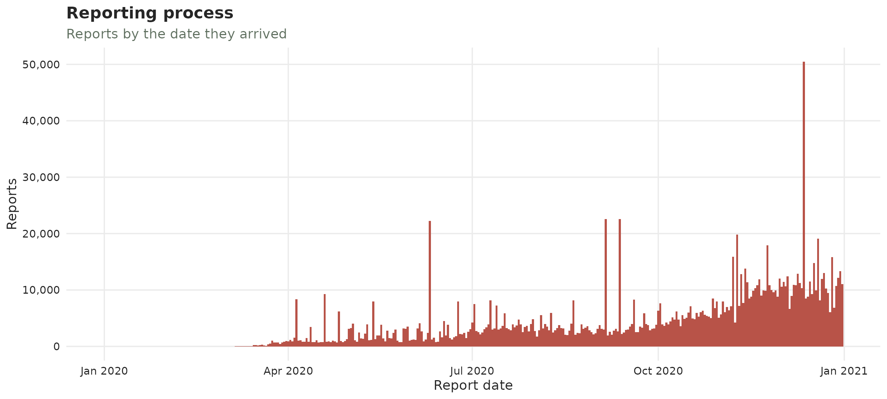
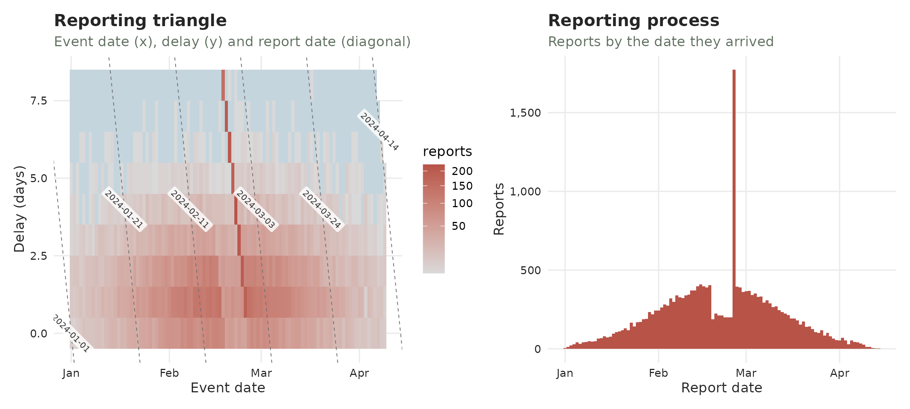
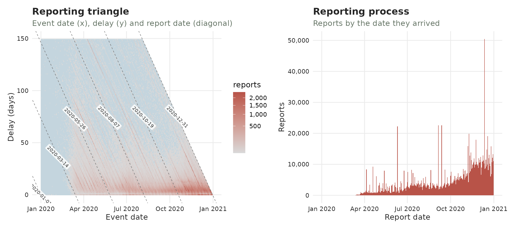
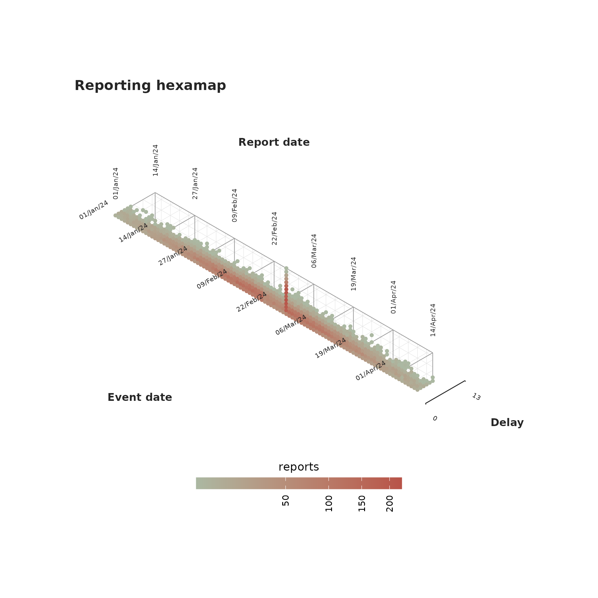
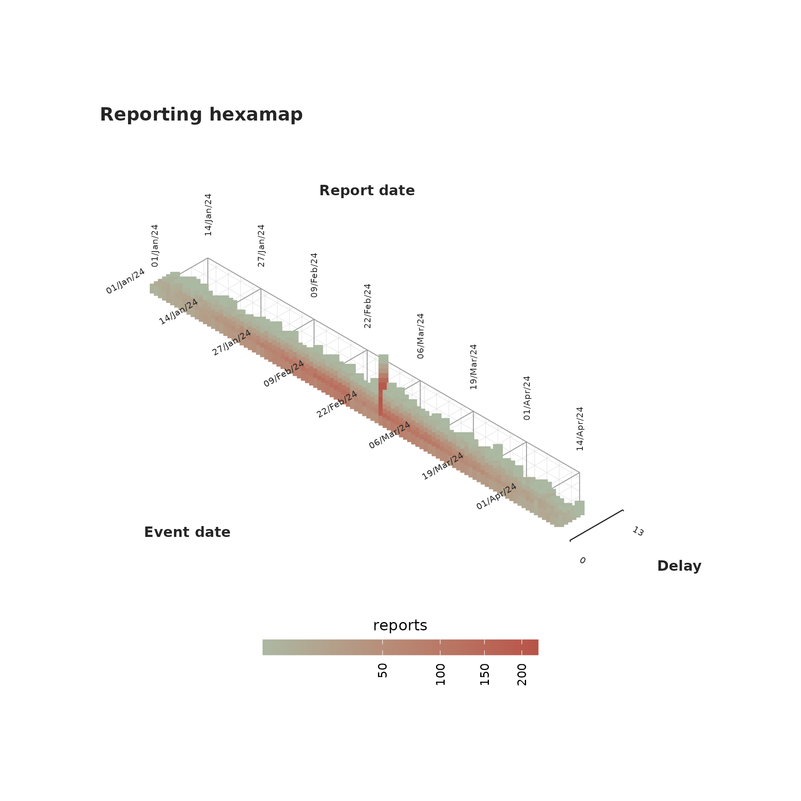
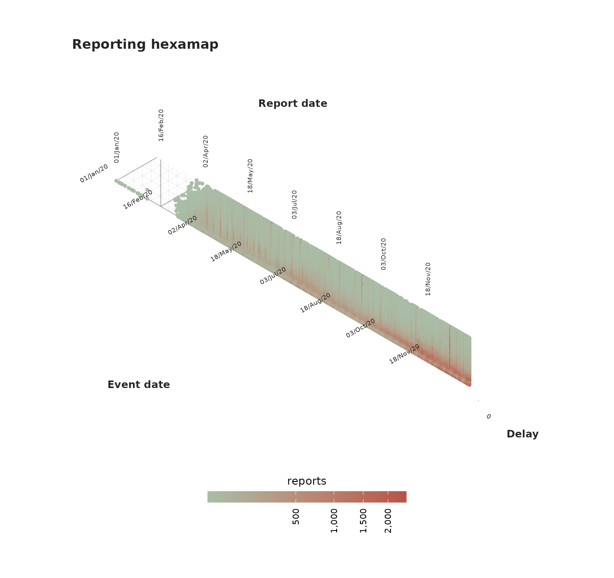
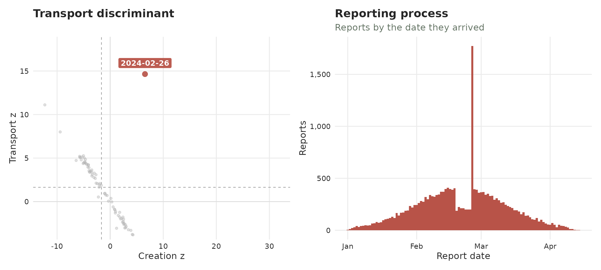

Batch reporting
Surveillance data does not always arrive smoothly. Sometimes the reporting system halts or reduces its output (e.g. a data-system outage, an overwhelmed jurisdiction) and the backlog is released later all at once. That release is called a batch: a collection of reports from previous periods that were held and reported all at once during a different reporting period. Intuivitively one can think of a batch as a collection of reports that –in an ideal scenario– should have been reported on a previous date but were actually released later.

A batch is easy to confuse with an epidemic surge. The important part is that the batch happens on the reporting date axis while a surge happens on the event date axis. A batch just moves reports to a later date not adding new cases while a real epidemic surge adds new cases. The tools here are designed to help you visualize that difference.
This article shows each plot twice: first on a clean, made-up outbreak with one obvious batch (so you learn the signature), then on real, COVID-19 data from the CDC (see
covid_us).
Two datasets to compare
The made-up outbreak.
This simulation consists of a bell-shaped curve over a hundred days, each case reported within a few days. For one week near the peak, the reporting system slows down with half of each day’s reports being held back and released days after. That release is the batch.
set.seed(82495)
#Simulate a curve
onset_days <- as.Date("2024-01-01") + 0:99
bell <- dnorm(seq(-2.5, 2.5, length.out = 100))
per_day <- round(400 * bell / max(bell)) + 8
onset <- rep(onset_days, per_day)
reported <- onset + rpois(length(onset), 1.5)
clean_tn <- tbl_now(tibble(onset = onset, reported = reported),
event_date = onset, report_date = reported,
data_type = "linelist", verbose = FALSE)
# Simulate a batch
ideal <- simulate_batch(clean_tn,
closed_dates = seq(as.Date("2024-02-19"), by = "day", length.out = 7),
held_fraction = 0.5)We can see the simulated data both from the event-date and the report-date perspectives:
plot_epidemic_process(ideal)
plot_reporting_process(ideal)
The real data
covid_us comes from the CDC’s individual-level COVID-19
Case Surveillance Public Use Data. It carries three dates. Here we
use the first and the last: symptom onset (onset_dt) as the
event, and registration at CDC (cdc_report_dt) as the
report. The middle one, pos_spec_dt, is the specimen
collection, and it is pooled away along with current_status
and sex – the batch question is about when reports
arrived, not about who they were.
data(covid_us)
covid_early <- covid_us |>
summarise(n = sum(n), .by = c(onset_dt, cdc_report_dt))
tn <- tbl_now(covid_early, event_date = onset_dt,
report_date = cdc_report_dt, case_count = n,
data_type = "count-incidence", verbose = FALSE)Half of all cases were reported within a few days, but the tail is long: some cases take weeks or months to surface.
We can see this dataset again from both the event-date and the report-date perspectives:

The reporting process
This plot, which we have previously shown, shows how many reports arrived by date. Batches or surges might correspond to spikes towering over their neighbours.
plot_reporting_process(ideal)
Reporting process of the simulated data
On the real data the reporting is spikier; a handful of peaks stick up where smooth epidemic reporting should be. Those are reporting artefacts either pure backlog releases, or a mix of backlog + a genuine surge (we’ll come back to this characterization later). The tallest is a single day of about 50K reports on 12 December 2020, sixteen times the 3K that arrive on a typical day; 10 June and 5 September are the other conspicuous ones.

Reporting process of the COVID-19 data
The reporting triangle
We provide two different visualizations of the reporting triangle. In both we plot the three temporal dimensions involved in the process: the event date, the reporting date and the delay. We cover the plots in tiles coloured by how many cases were registered then.
The classical reporting triangle
The classical view is given by plot_reporting_triangle()
where each tile is described by when it happened (across) and
how long they took to be reported (vertical). The diagonal
shows reports that arrive on the same day.
An indicator of a batch is a bright diagonal reaching high
up which reporesents many delayed cases being all reported on
the same day.
plot_reporting_triangle(ideal)
Classical reporting triangle of the simulated data
On COVID-19, the triangle is a broad blue-grey haze (most cases reported over many months) crossed by bright diagonals. They correspond to the same spikes seen in the reporting process:

Classical reporting triangle of the COVID-19 data
The reporting hexamap
Event date, report date and reporting delay can be seen as an
age-period-cohort triple
(report = event + delay, exactly
period = cohort + age), so the reporting triangle can be
drawn as a hexamap in the style of Jalal and Burke
(2020): each (event, delay) cell is a point on a
hexagonal lattice, coloured by its report count, with event date, report
date and delay running along the three 60-degree axes. Because a batch
is a happens in the report date, it shows up as a
vertical stripe; the fast reporting bulk sits along the
short-delay bottom edge.
plot_reporting_hexamap(ideal)
The marks are sized in millimetres while the lattice is sized in data
units, so no default can suit every combination of cell count and figure
size. size is the knob: raise it until the points nearly
touch at the size you are actually drawing, and shape = 15
swaps the circles for squares, which tile more closely.
plot_reporting_hexamap(ideal, size = 3, shape = 15)
On covid the vertical stripes are the 2020 backlog releases. The
delay axis is capped with max_delay to keep the map to
where the reports are.
plot_reporting_hexamap(tn, max_delay = 60)
Transport vs creation
This is the main tool for detecting batches and surges. Before the plot, we will explain the whole idea. Consider a daily outbreak with reports incoming each day. Three things can change the number of reports:
- a hold – a reporting office falls behind and some days’ reports are withheld;
- a batch – the day the backlog (hold) is finally released, all at once;
- a surge – an increase in the epidemic process: more people falling ill and being reported.
We simulate one of each in a clean epidemic and colour every day by its type (grey = ordinary day):

In the previous plot, every bar is one report date. The batch towers where the held reports land together; the hold is the small blue dip just before it; the surge is a genuine bump of new cases.
The transport discriminant turns each day into two numbers:
- A creation score – did this stretch of days genuinely gain cases? A larger surge implies a larger creation score.
- A transport score – were the days just before missing reports? A backlog release after a hold pushes it up.
We plot every day by those two numbers and observe the directions of the three disturbances:

Identifying any bar with its dot we can conclude:
- A batch (backlog release, red) shoots up and right – the days before were depleted (high transport) but not as many new cases were created (right);
- A surge (green) shoots right – cases genuinely appeared (high creation), with apparent preceding hole;
- A hold (blue) drifts left – reports have apparently gone missing (transport rising) while the window has lost cases (creation negative).
Ordinary days (grey) sit in the cloud through the middle. That is the
whole idea behind transport_discriminant() and
diagnose_batches(): a batch is high transport with
little creation.
The transport discriminant
The previous plot can be done with the
plot_transport_discriminant() function:
plot_transport_discriminant(ideal)
Which also works to identify the COVID-19 cases:
plot_transport_discriminant(tn, period = 7)
Recovering the data
The diagnose_batches() function runs the transport test
for the batch signature and returns, for every report date, the
batch flag – a Benjamini-Hochberg-corrected verdict that
controls the false-discovery rate across all dates (see
?diagnose_batches for the full column reference). Keeping
the batch rows gives the confirmed releases together with
their deficit (how depleted the days just before were) and
delta (how little the window total actually changed).
diagnose_batches(ideal) |>
filter(batch)#> # A tibble: 1 × 7
#> report_date reported baseline deficit delta p_transport_bh batch
#> <date> <dbl> <dbl> <dbl> <dbl> <dbl> <lgl>
#> 1 2024-02-26 1773 336. 972. 465. 7.03e-47 TRUEOn covid we pass period = 7 to divide out the weekly
reporting cadence. Only one date survives the
Benjamini-Hochberg-corrected batch flag: 7 November
2020, which reported about twice its baseline and was
preceded by a matching deficit of roughly the same size. That pairing is
the whole test – the taller spikes of 12 December and 10 June are not
flagged, because nothing was withheld beforehand to release, which makes
them surges rather than batches:
diagnose_batches(tn, period = 7) |>
filter(batch)#> # A tibble: 1 × 7
#> report_date reported baseline deficit delta p_transport_bh batch
#> <date> <dbl> <dbl> <dbl> <dbl> <dbl> <lgl>
#> 1 2020-11-07 15882 8174. 8053. -345. 0.00405 TRUEThe sensitivity of the batch flag can be adapted with
alpha.
If you have any questions or comments regarding the contents of this article please open an issue on Github.
Learning more
- A tutorial on real life surveillance data. Takes you from cleaning to diagnosing errors in the data to nowcasting: https://rodrigozepeda.github.io/tbl.now/articles/example.html
- The second part of the tutorial with a revision process: the optional third date, where a reported case is later confirmed, retracted or left pending: https://rodrigozepeda.github.io/tbl.now/articles/example_revisions.html
- The Get started vignette: the whole workflow, from a raw line list to a scored nowcast, in five minutes: https://rodrigozepeda.github.io/tbl.now/articles/tbl.now.html.
-
More on the
tbl_nowobject: every attribute, the three data types, the revision process, temporal effects and thedplyrmethods: https://rodrigozepeda.github.io/tbl.now/articles/more-on-tbl-now.html - More thoughts on diagnosing your dataset with
tbl.nowhttps://rodrigozepeda.github.io/tbl.now/articles/diagnosing-a-tbl-now.html - Detecting reporting batches with
tbl.nowhttps://rodrigozepeda.github.io/tbl.now/articles/batches.html - How to use different nowcasting engines from
tbl.now: here you can learn how it connects to the other nowcasting packages. https://rodrigozepeda.github.io/tbl.now/articles/nowcasting-models.html - How to nowcast with multiple engines, backtest and ensemble nowcasts. https://rodrigozepeda.github.io/tbl.now/articles/ensemble-nowcasting.html
- Adding your own custom nowcasting model https://rodrigozepeda.github.io/tbl.now/articles/custom-nowcast-models.html
- Package reference: https://rodrigozepeda.github.io/tbl.now/reference/